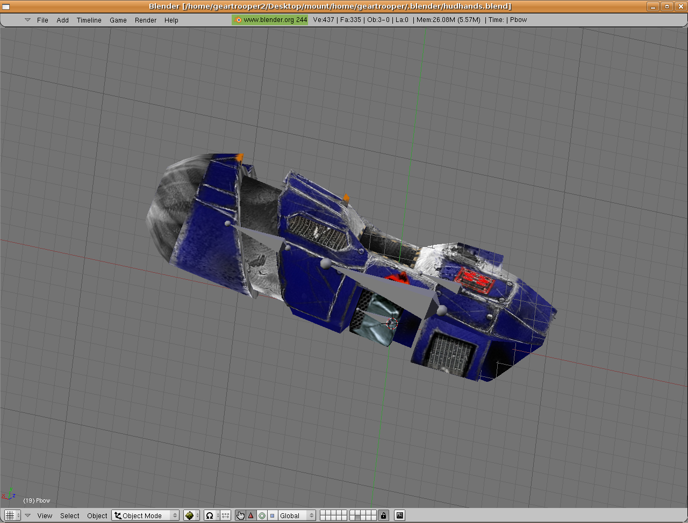
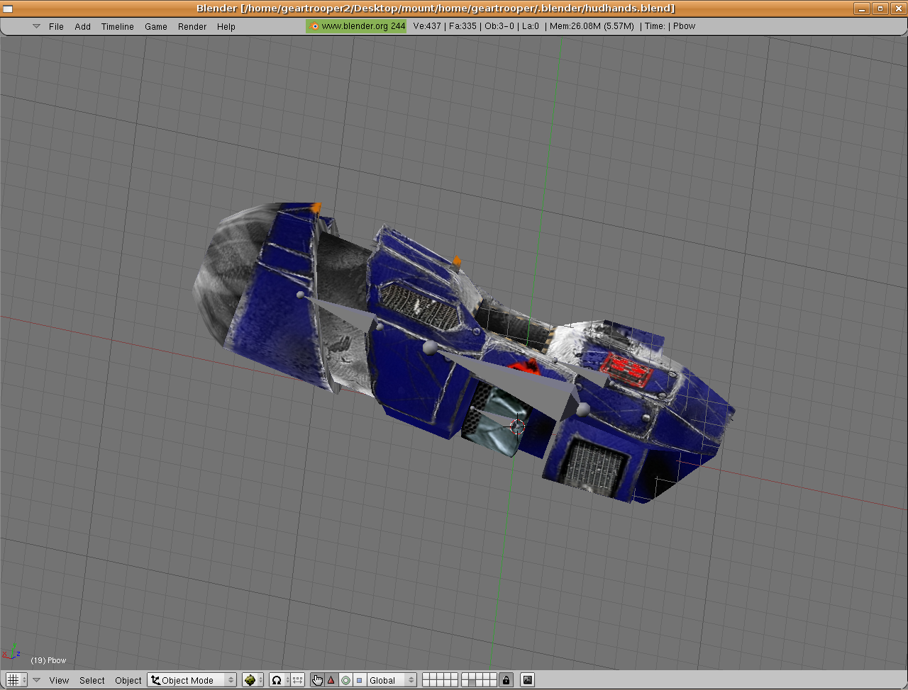
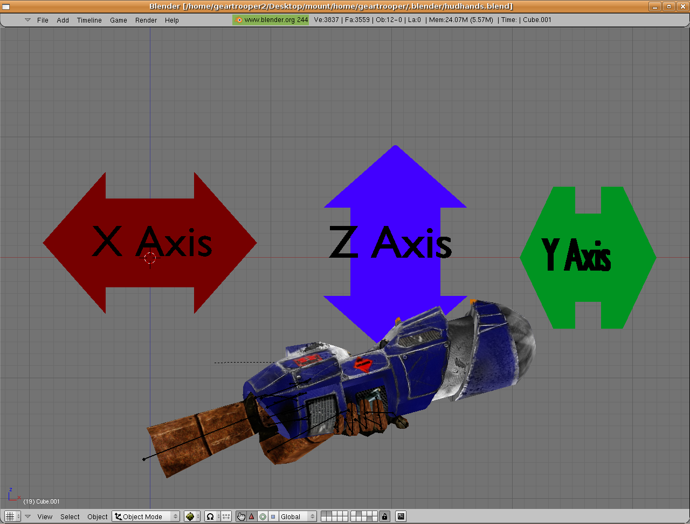
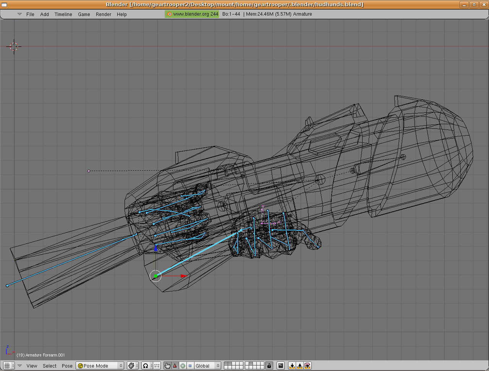

Show below are the hands and the first weapon.
 
Go to front view [keypad 1]. Align the hands and weapon as so. Be sure to keep the hands and weapons armatures separate. The reason will become apparent later. In the following picture you can get a general idea as to the position and scaling of the hands and weapons so they will appear correctly in Sauerbraten.

The hands and weapon together are approximately 30 blender units long and 20 blender units high. Not shown is the top view which places the center of the weapon approximately 10 blender units to the right of the Y axis. Now we will affix empties or tags, as they are known in Sauerbraten, to both the weapon and the hands. Still in front view lets concentrate on the hands armature and pick a bone that most resembles a root bone. To this we will snap the cursor with [shift-s, cursor to selection].

Parent the empty to said bone with [ctrl-p, parent to bone]. Name the empty something appropriate like 'tag_hands' for the time being. After having completed this step duplicate the empty. Remove the parent child relationship but keep the postion with [alt-p, clear and keep transformation]. Now select the root bone of the weapon and parent the empty to the bone with [ctrl-p, parent to bone]. Name the empty, 'tag_grenadelauncher' or something fitting. Don't worry too much about the axis of the empties yet as we will align them later. The finished step should look something like the picture on the next page;
Next Page;